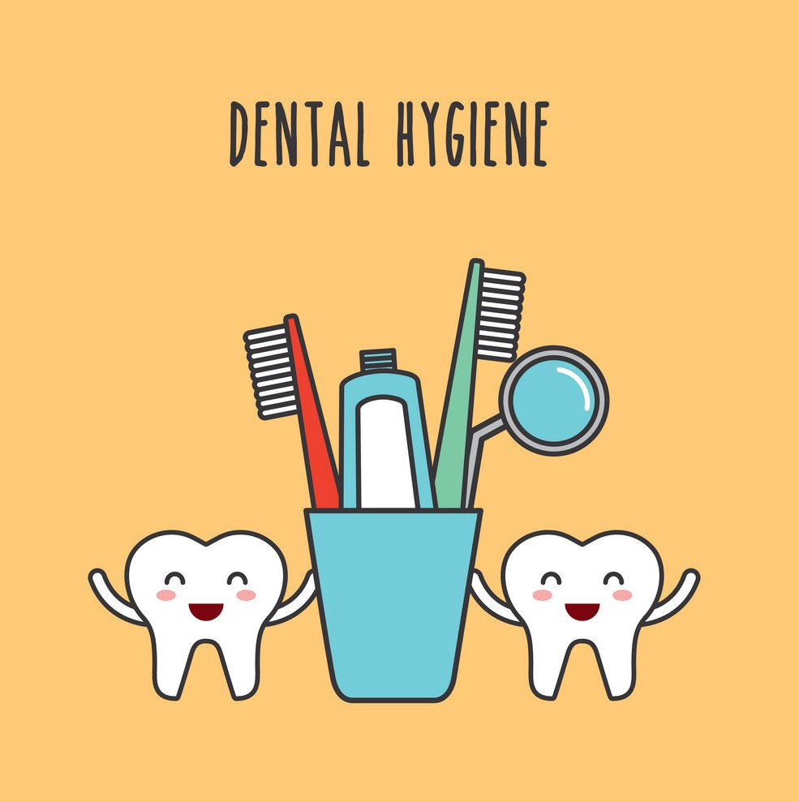
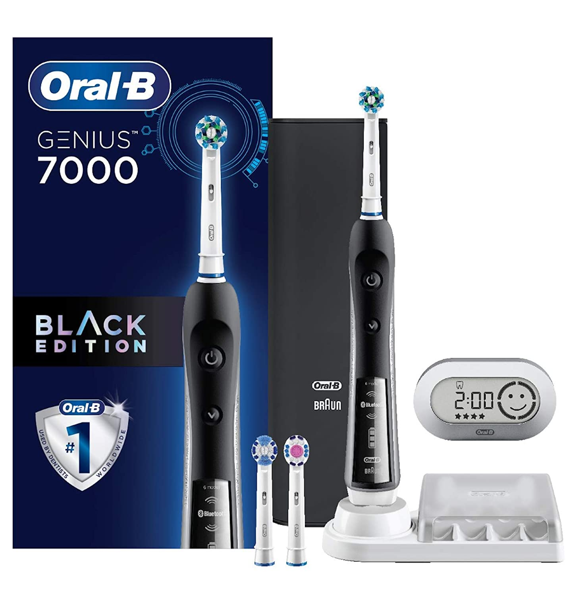
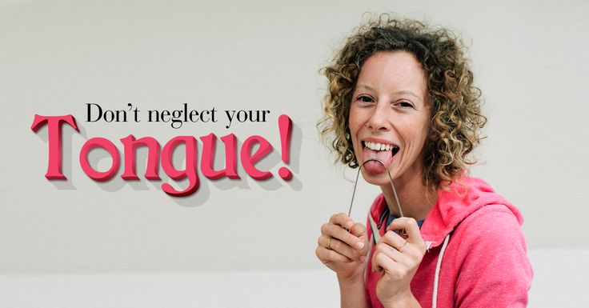

You’ve probably heard numerous times that a daily dental hygiene routine should include brushing two times a day and flossing once a day. While this is a good baseline, simply brushing and flossing may not be enough to keep your oral health in the best shape possible. In this blog post, I’ll share five tips and tricks to upgrade your dental hygiene so you can keep your teeth healthy between your 6-month cleaning appointments!
An electric toothbrush is often considered more effective than traditional toothbrushes, when used correctly. With an electric toothbrush, users do not have to brush back and forth but simply guide the brush through the quadrants of the mouth and the tiny vibrations do the cleaning. Especially if you tend to see more plaque and calcium buildup in your mouth, an electric toothbrush can be more effective in removing these particles daily. Many electric toothbrushes also have a built-in 2-minute timer to help keep you accountable! It’s important to note that brushing too hard—whether with an electric or traditional toothbrush—can damage your gums. Be careful when brushing to always use a 45-degree angle towards the gum line and brush softly to avoid damaging your gums and wearing away the enamel.
Flossing once a day is extremely important to your oral health. A toothbrush is only able to reach 60% of your teeth’s surfaces, and flossing is the only way to remove plaque and debris from the other 40%. However, flossing only provides a benefit to your oral health when done correctly. By not using a C-shape when flossing and not going far enough under the gums, flossing won’t remove the plaque hidden in between your teeth and under the gums. On the contrary, those who floss too hard run the risk of damaging their gums, resulting in additional oral health issues down the road. Learn how to floss properly.
It’s recommended that patients floss before brushing their teeth so they can remove debris loosened during flossing, but the more important issue is to be sure you’re flossing at some point during a day. If you floss your teeth after you brush or at another point throughout the day, be sure to rinse with water afterward to flush your mouth from bacteria and debris that the floss loosened.
You never know when you may need to brush those pearly whites! If you have a lunch that results in food particles stuck in your teeth or know that you need to do a better job of brushing your teeth overall, it’s always good to keep an extra toothbrush around for emergencies. Be sure to keep it in a secure location and with a cover on it to prevent dust and particles from accumulating on your toothbrush.
The tongue has millions of bacteria living on it and can contribute to bad breath and plaque buildup in the mouth. When you brush, be sure to gently brush your tongue as well to remove bacteria. You can also add a mouthwash to your daily routine to freshen your breath and kill bacteria. Maks sure to use one with fluoride for the added benefit of strengthening your teeth and protecting your mouth overall.
